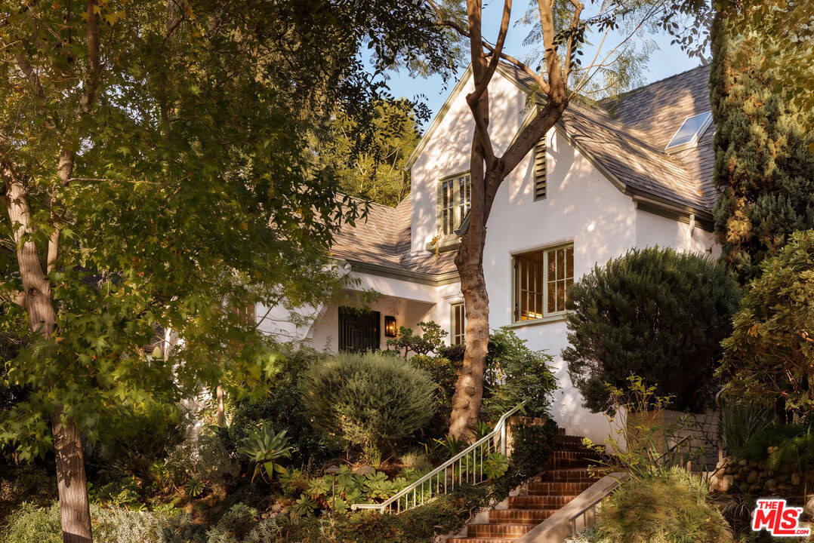
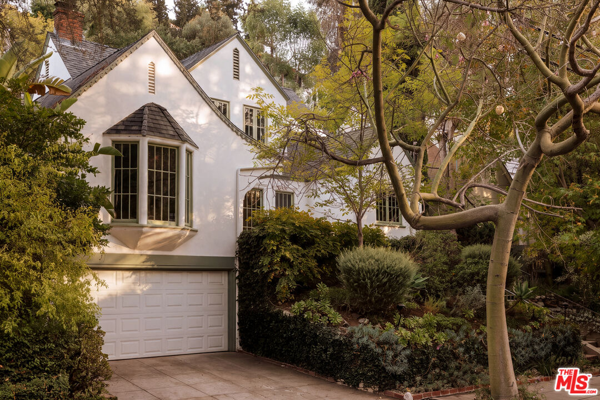
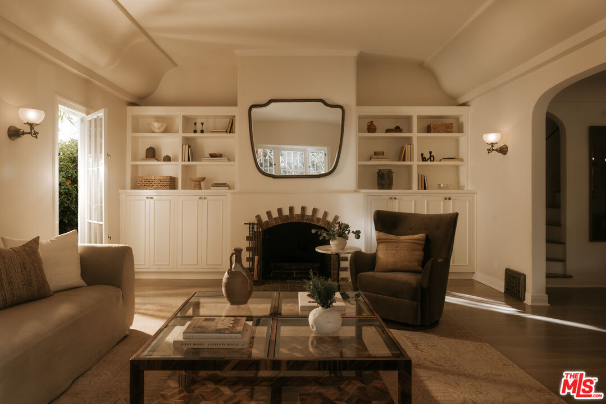
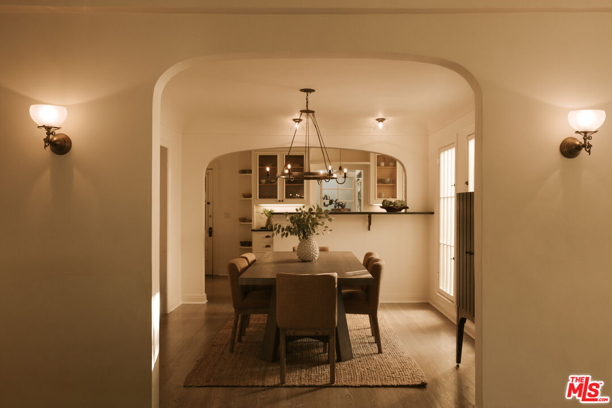

Obsession No. 025Los Feliz Oaks · Los Angeles
2376 Canyon Dr
The garden, this second-floor garden, is just the perfect combination of English countryside whimsy, and you just get transported out of LA.
Why it made the edit
“The garden, this second-floor garden, is just the perfect combination of English countryside whimsy, and you just get transported out of LA.”
The garden, this second-floor garden, is just the perfect combination of English countryside whimsy, and you just get transported out of LA. The whole property feels tucked into its own little world: mature trees, climbing fig, flowering vines, winding brick paths, and a series of places to sit outside and stay awhile.
Then there is the cottage itself. It was built in 1925 and still has the kind of details that make an older Los Angeles house feel singular—arched openings, original plasterwork, vintage tile, and windows that keep pulling the garden back into the rooms. The dining area looks toward the kitchen, the living room has a fireplace and built-ins, and the exterior spaces do the very rare thing of making you forget how close you are to everything.
Three bedrooms, two baths, and 1,955 square feet on a 4,000-square-foot lot in Los Feliz Oaks, listed at $1,985,000. It is the second-floor garden that stays with me: all that green, all that romance, and a complete change of scenery without leaving Los Angeles.



Want to see it in person?
Curious about this one?
Let’s talk.
Listed by Lori Harris & Brock Harris, Keller Williams Realty Los Feliz. House of Zonshine does not represent this listing. Property details are from listing information and public sources and should be independently verified.